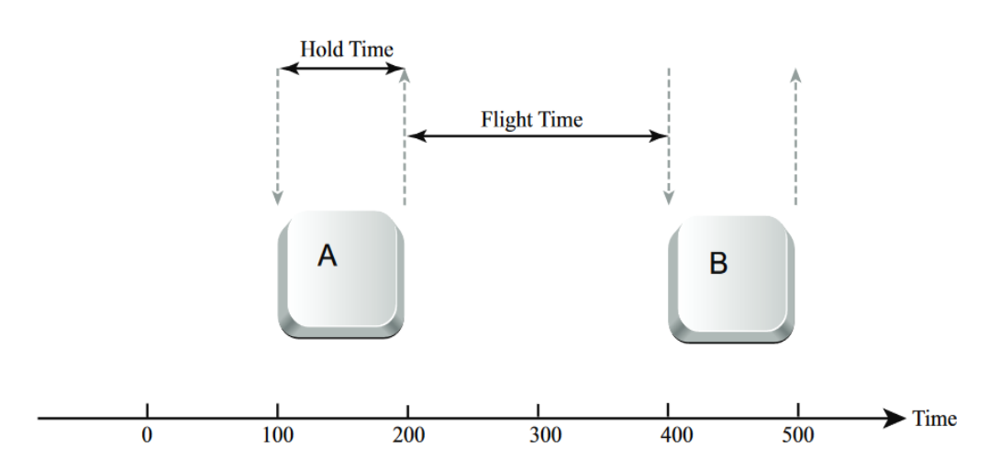
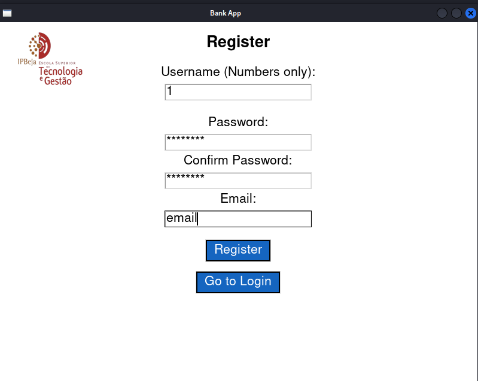
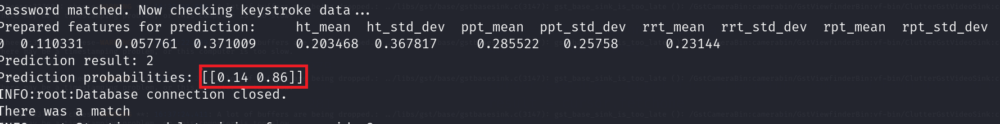

As cyberattacks on the financial sector escalate—costing the industry $2 billion over the last 20 years—traditional passwords are no longer enough. This project details the development of a secure banking application that implements Two-Factor Authentication (2FA) using Facial Recognition and continuous authentication via Keystroke Dynamics (KD) to secure user sessions, even during idle timeouts.
Below is the complete breakdown of our implementation, code decisions, and experimental results.
The project was built in Python. We started by importing specific libraries chosen for their robustness in data handling and machine learning.
We used logging for traceability, pandas for data manipulation, and sklearn for our Machine Learning components.
import logging
from utils import log_event from math import sqrt import pandas as pd import joblib from sklearn.ensemble import RandomForestClassifier from sklearn.model_selection import train_test_split from sklearn.metrics import accuracy_score, classification_report from io import BytesIO import sqlite3 db_path = "users.db" import requests import cv2Key Technical Decisions:
cv2 for video capture and face_recognition (based on dlib) for the heavy lifting. Crucially, we specified the CNN model over HOG for better accuracy, even though it requires more processing power.We designed two primary tables: one for users and one for their biometric keystroke data.
The Users Table: We store the password as a BLOB (encrypted) and the face embedding as a BLOB. Note that the username is unique and mandatory.
cursor.execute("""
CREATE TABLE IF NOT EXISTS users (
id INTEGER PRIMARY KEY AUTOINCREMENT,
username TEXT UNIQUE NOT NULL,
password BLOB NOT NULL,
email TEXT NOT NULL,
face_embedding BLOB
)
""")
The Keystrokes Table: This table links to the users table via a Foreign Key. It stores the statistical features we extract from a user's typing: Mean and Standard Deviation for Hold Time (HT) and flight times (PPT, RRT, RPT).
cursor.execute("""
CREATE TABLE IF NOT EXISTS keystrokes (
id INTEGER PRIMARY KEY AUTOINCREMENT,
user_id INTEGER NOT NULL,
ht_mean REAL, ht_std_dev REAL,
ppt_mean REAL, ppt_std_dev REAL,
rrt_mean REAL, rrt_std_dev REAL,
rpt_mean REAL, rpt_std_dev REAL,
FOREIGN KEY(user_id) REFERENCES users(id)
)
""")We implemented two core functions for facial biometrics: registration and authentication.
The register_face function first asks for explicit permission. If granted, it attempts to capture a clear frame up to 10 times.
def register_face(username, conn=None):
response = messagebox.askquestion("Face Authentication", "Do you allow the app to access your camera?")
if response != 'yes':
return False
retries = 0
max_retries = 10
while not registered and retries < max_retries:
ret, frame = cap.read()
if not ret:
retries += 1
continue
rgb_frame = cv2.cvtColor(frame, cv2.COLOR_BGR2RGB)
face_locations = face_recognition.face_locations(rgb_frame, model='cnn')
face_encodings = face_recognition.face_encodings(rgb_frame, face_locations)
if len(face_encodings) == 1:
face_embedding = np.array(face_encodings[0], dtype=np.float64).tobytes()
cursor.execute('UPDATE users SET face_embedding=? WHERE username=?', (sqlite3.Binary(face_embedding), username))
conn.commit()
registered = True
Decision: We convert BGR to RGB because face_recognition requires it. We strictly check len(face_encodings) == 1 to ensure we are only registering a single, clear face.
During login, authenticate_face compares the live camera feed against the stored embedding. We use Euclidean distance to measure similarity.
if len(face_encodings) == 1:
user_embedding = cursor.execute('SELECT face_embedding FROM users WHERE username=?', (username,))
# ... fetch and convert buffer ...
distance = np.linalg.norm(face_encodings[0] - user_embedding)
if distance < 0.6:
return usernameDecision: We set the distance threshold at 0.6. If the calculated distance is lower than this, it's a match. If not, authentication fails.
This system captures how a user types. This is critical for our idle timeout security logic.

Figure 3.1: Visualization of Keystroke Metrics (Hold Time vs Flight Time)
We use on_key_press and on_key_release events to log timestamps. We explicitly ignore modifier keys (Shift, Ctrl, Alt) to avoid noise in the data.
def on_key_press_password(event):
if event.keysym not in ["Shift_L", "Control_L", "Alt_L", "BackSpace", "Delete"]:
password_keystrokes["press_times"].append(time.time())
def on_key_release_password(event): if event.keysym not in ["Shift_L", "Control_L", "Alt_L", "BackSpace", "Delete"]: password_keystrokes["release_times"].append(time.time())
Raw timestamps aren't enough. We convert them into statistical features using compute_keystroke_features and calculate_mean_and_std.
def calculate_mean_and_std(feature_list):
mean = sum(feature_list) / len(feature_list)
squared_diffs = [(x - mean) ** 2 for x in feature_list]
variance = sum(squared_diffs) / (len(feature_list) - 1 if len(feature_list) > 1 else 1)
std_dev = sqrt(variance)
return mean, std_devThe Metrics: We calculate the Mean and Standard Deviation for specific flight times (e.g., Press-to-Press, Release-to-Release). This provides a "fingerprint" of the user's typing rhythm.
When a user registers or logs in successfully, we retrain their personal model using train_model.
def train_model(training_data, user_id, conn=None):
required_features = ['ht_mean', 'ht_std_dev', 'ppt_mean', 'ppt_std_dev', ...]
X = training_data[required_features]
y = training_data['user_id']
rf_model = RandomForestClassifier()
rf_model.fit(X, y)
# Serialize the model to store in DB
model_stream = BytesIO()
joblib.dump(rf_model, model_stream)
serialized_model = model_stream.read()
To verify a user, predict_user_model loads the serialized model and calculates the probability that the current typing belongs to the user.
def predict_user_model(new_data, conn=None, threshold=0.7):
# ... load model ...
prediction = model.predict(X)
probabilities = model.predict_proba(X)
max_prob = max(probabilities[0])
if max_prob >= threshold:
return prediction[0]
else:
return 0Decision: We set a strict threshold of 0.7 (70%). If the model is less than 70% confident, we treat it as an anomaly.
The registration process is comprehensive. It validates inputs, ensures password strength (>8 chars), captures initial keystrokes, encrypts data, and registers the face.

Figure 4.1: User Registration GUI with Password Strength and Biometric Consent.def register_user():
# Input validation
if len(password) < 8: return # Strength check
# Capture keystrokes
features_1 = compute_keystroke_features(password_keystrokes)
# Encrypt data
hashed_password = hash_password(password)
encryption_key = load_aes_key()
encrypted_email = encrypt_data(email, encryption_key)
# Insert into DB
cursor.execute("INSERT INTO users ...", (username, hashed_password, encrypted_email))
# Register Face
face_registration_success = register_face(username, conn)
if not face_registration_success:
conn.rollback() # Undo everything if face fails
return
# Train initial model
train_model(training_data, user_id, conn)Login requires passing the 2FA check (Face + Password). It also silently analyzes keystrokes to update the model or flag security issues.
def login_user():
# 1. Face Authentication
if not authenticate_face(username):
return
# 2. Password Check
if verify_password(password, hashed_password):
# 3. Keystroke Analysis
features_1 = compute_keystroke_features(password_keystrokes)
matched = predict_user_model(features_1, conn)
if matched == user_id:
security_flag = False
else:
security_flag = True
send_security_alert_in_background(user_email)
# Trigger Physical Matrix request (See logic in flowchart)
If the keystroke pattern doesn't match, we enable a security_flag. This triggers a background email alert and forces the user to input a code from a Physical Matrix card.
To balance security with usability, if a session times out, we use loginAfterIDLE. This function skips the facial recognition (to be less intrusive) but enforces the keystroke check strictly via a pop-up password request.
We implemented a dedicated security.py file to handle encryption standards.
# Generate 256-bit AES Key
def generate_aes_key(): return os.urandom(32)
Encrypt with AES-CFB
def encrypt_data(plaintext, key): iv = os.urandom(16) cipher = Cipher(algorithms.AES(key), modes.CFB(iv), backend=default_backend()) return base64.b64encode(iv + ciphertext).decode()
Hash Password with Bcrypt
def hash_password(password): salt = bcrypt.gensalt() return bcrypt.hashpw(password.encode(), salt)Decision: We used AES-256 in CFB mode for data encryption and Bcrypt for password hashing. The AES key is fetched securely via SSH from a Key Management Service (KMS) rather than being hardcoded.
We conducted a study with 3 users to test efficacy, efficiency, security, and privacy. The users had different password complexities:
We tested under Normal, Weak, and Mixed lighting.
Result: The CNN model is robust but sensitive to lighting quality.
We measured the probability of successful authentication over 10 attempts per user.

Figure 6.1: Learning Curve: Prediction Probability vs Number of Attempts.Result: The ML model learns complex patterns effectively over time.
We asked users to type each other's passwords to test for false positives.
Critical Finding: Password complexity is directly linked to the security of Keystroke Dynamics. Simple passwords lead to generic typing rhythms that are easier to spoof.
We attempted to unlock User A's account with User B's face.
Result: 100% failure rate for impostors. The system perfectly distinguished between users.
username. It is restricted to numbers only (pseudonymization), so it poses no privacy risk. This allows for much faster database lookups compared to decrypting every username on login.While successful, we identified areas for improvement: